Chemical reactions proceed until equilibrium is reached
{width="11.072916666666666in" height="0.6875in"}
Gibbs free energy change
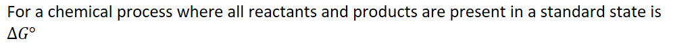{width="10.697916666666666in" height="0.6770833333333334in"}
{width="8.395833333333334in" height="0.3541666666666667in"}
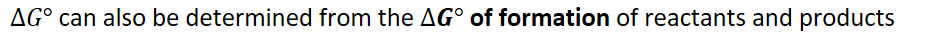{width="9.875in" height="0.3541666666666667in"}
{width="5.885416666666667in" height="0.375in"}
{width="5.84375in" height="0.3541666666666667in"}
ENTROPY and GIBBS FREE ENERGY are NOT THE SAME!
Thermodynamic Favorability:
Thermodynamically favorable changes proceed to equilibrium without external intervention
However, just because a reaction is favorable doesn't mean it happens quickly
RATE is not a THERMODYNAMIC property
It is sometimes necessary to consider both entropy and enthalpy to determine thermodynamic favorability
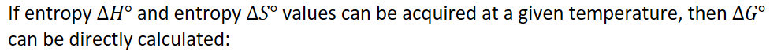{width="10.322916666666666in" height="0.6875in"}
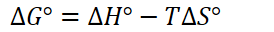{width="2.8541666666666665in" height="0.3333333333333333in"}
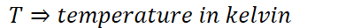{width="3.9791666666666665in" height="0.3333333333333333in"}
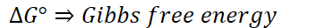{width="3.78125in" height="0.3333333333333333in"}
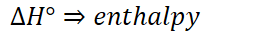{width="2.6458333333333335in" height="0.3333333333333333in"}
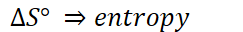{width="2.53125in" height="0.3333333333333333in"}
{width="9.84375in" height="0.3541666666666667in"}
| 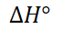{width="0.7083333333333334in" height="0.3333333333333333in"} | 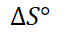{width="0.6770833333333334in" height="0.3333333333333333in"} | Symbols | 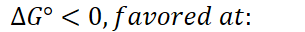{width="3.1770833333333335in" height="0.3333333333333333in"} | |
|----------------------------------------------------------------------------------------------------------------------------------------------------------|----------------------------------------------------------------------------------------------------------------------------------------------------------|---------|----------------------------------------------------------------------------------------------------------------------------------------------------------|---------------------------------------------------------------------------------------------------------------------------------------------------------|
| < 0 | > 0 | < > | {width="2.25in" height="0.3541666666666667in"} | Value is always negative |
| > 0 | < 0 | > < | {width="3.1666666666666665in" height="0.3541666666666667in"} | Value is always positive |
| > 0 | > 0 | > > | 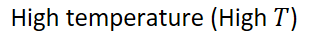{width="3.2604166666666665in" height="0.3541666666666667in"} | 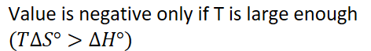{width="4.916666666666667in" height="0.6770833333333334in"} |
| < 0 | < 0 | < < | Low temperature (Low T) | 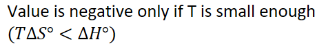{width="4.927083333333333in" height="0.6770833333333334in"} |
{width="7.666666666666667in" height="0.3541666666666667in"}
<!-- -->
{width="7.958333333333333in" height="0.3541666666666667in"}